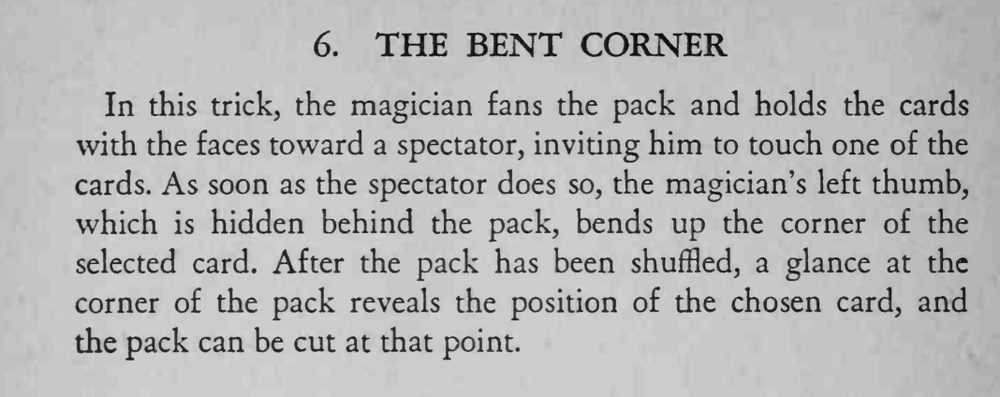

观众只是用手指点了一张牌，魔术师把牌洗乱后照样能把它找出来。
折角要小，用拇指指甲轻轻一压即可，别让观众听见纸响。

In this trick, the magician fans the pack and holds the cards with the faces toward a spectator, inviting him to touch one of the cards. As soon as the spectator does so, the magician's left thumb, which is hidden behind the pack, bends up the corner of the selected card. After the pack has been shuffled, a glance at the corner of the pack reveals the position of the chosen card, and the pack can be cut at that point.